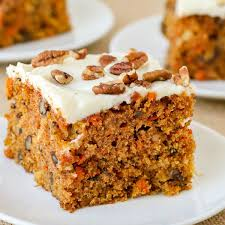

Carrot Cake Recipe
Description
Carrot cake is a moist and spiced dessert made with grated carrots, often enhanced with nuts or raisins, and layered with rich cream cheese frosting. Its balance of sweetness and warmth makes it a classic comfort treat.
Ingredients
- 6 cups grated carrots
- 1 cup brown sugar
- 1 cup raisins
- 4 eggs
- 1 ½ cups white sugar
- 1 cup vegetable oil
- 2 teaspoons vanilla extract
- 3 cups all-purpose flour
- 4 teaspoons ground cinnamon
- 1 ½ teaspoons baking soda
- 1 teaspoon salt
- 1 cup chopped walnuts
Rosewater Syrup
- 1 cup white sugar
- ½ cup water
- 1 teaspoon lemon juice
- ⅛ teaspoon rose water (Optional)
Steps
- Combine grated carrots and brown sugar in a medium bowl. Let sit for 1 hour, then stir in raisins.
- Preheat the oven to 350 degrees F (175 degrees C). Grease and flour two 10-inch round cake pans. Beat eggs in a large bowl until light.
- Gradually beat in white sugar, oil, and vanilla.
- Combine flour, cinnamon, baking soda, and salt in a separate bowl, then stir into egg mixture until absorbed.
- Stir in carrot mixture and walnuts. Pour evenly into the prepared pans.
- Bake in the preheated oven until an inserted toothpick comes out clean, 45 to 50 minutes.
- Cool for 10 minutes before removing cake layers from the pans; let cool completely.